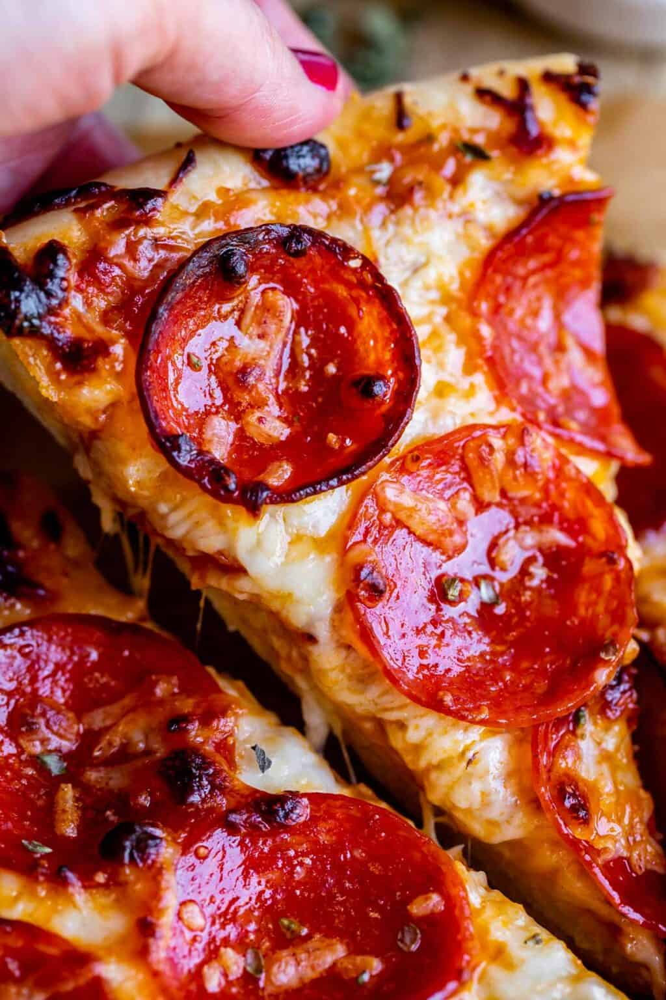

Pizza

Description
I love this Easy Homemade Pizza Recipe! I have been perfecting this
recipe for years. It is quick to put together and so versatile. I’ll
give you lots of tips, tricks, and ideas to get the best homemade pizza
to ever come out of your wimpy, not-wood-fired oven!
*If you do not have a pizza stone, you should dust whatever you are
baking your pizza on (pizza pan, baking sheet) with cornmeal. This
will help prevent sticking.
Ingredients and Equipment
Ingredients
- 1 16 ounce ball of pizza dough
- 1 tablespoon olive oil
- 1 cup pizza sauce
- 3 ounces thinly sliced mozzarella cheese
- 5 ounces shredded mozzarella cheese
- 2.5 ounces pepperoni
- 2 tablespoons shredded parmesan cheese
Equipment
- Pizza stone
- Parchment paper
- Pizza peel or flat baking sheet
Steps
- Place a pizza stone in the bottom third of your oven.
- Preheat your oven to 550 degrees F.
- Prepare a work surface.
- Roll out the dough.
- Transfer the dough to a square of parchment paper.
- Drizzle about a tablespoon of olive oil over the top of
your dough.
- 1 to 2 minute par bake.
- Add 1 cup of pizza sauce
- Add 3 ounces thinly sliced mozzarella, and then top with 5
ounces of shredded mozzarella.
- Add about a half package of pepperoni (or olives, mushrooms,
ham and pineapple, sausage, red onions, or literally any
toppings you want.
- Sprinkle 2 tablespoons shredded parmesan cheese over
your toppings.
- Bake the pizza for about 8-12 minutes.
- Remove your pizza from the oven using the pizza peel.
- Let cool a couple minutes, then transfer to a
cutting board. Slice into 8 pieces and devour!